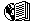
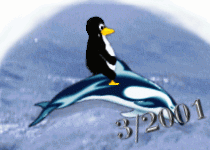

|
Convert to GutenPalm or to PalmDoc |
Bienvenidos al número de Marzo de 2001 de LinuxFocus |

Esperamos que os guste leer LinuxFocus. Con cada número obtenemos 'feedback' de
muchos lectores a los que les gusta la revista y los beneficios que
tiene una revista libre y multilingue sobre Linux. Una fuente de información
disponible no sólo en inglés, que ayuda a difundir Linux y la idea detrás
de él por todo el mundo.
LinuxFocus tiene muchos lectores. Y nos gustan tanto los lectores que estan siempre
interesados en explorar nuevas areas de Linux o que simplemente se dejan caer
para leer algun artículo. LinuxFocus está para eso, como una referencia que se
puede consultar sin absolutamente ningun coste.
Muchos lectores sienten que podrían contribuir a este esfuerzo. Es fácil: difundir LinuxFocus y su idea. No es necesario pintar un enorme poster. Coméntalo con un amigo, o involucrate en LinuxFocus. Traduce un artículo a tu lengua materna. Para eso, simplemente contacta con el editor de la seccion correspondiente. Incluso tenemos articulos esperando su traducción al inglés.
![[point]](../../common/images/frame.gif) Replicado de datos en tiempo real bajo Linux
, por Atif Ghaffar
Usando distintos ISPs para su acceso a Internet
, por Guido Socher
Revisión de juegos - Penguin Command
, por Harald Radke
Grabación en mp3 en tiempo real
, por Philip de Groot
¡El Servidor de Fax fácil!
, por hacklinux.org
GNUstep, el OpenStep open source
, por Georges Tarbouriech
Evitando agujeros de seguridad al desarrollar una aplicación - Parte 2: memoria, pila y funciones, código shell
, por Frédéric Raynal, Christophe Blaess, Christophe Grenier
Reseña bibliográfica: Beginning Linux Programming - Segunda edición,
por Katja Socher
POVRAY IV: Uso de las texturas en Povray
, por Antonio Castro
Replicado de datos en tiempo real bajo Linux
, por Atif Ghaffar
Usando distintos ISPs para su acceso a Internet
, por Guido Socher
Revisión de juegos - Penguin Command
, por Harald Radke
Grabación en mp3 en tiempo real
, por Philip de Groot
¡El Servidor de Fax fácil!
, por hacklinux.org
GNUstep, el OpenStep open source
, por Georges Tarbouriech
Evitando agujeros de seguridad al desarrollar una aplicación - Parte 2: memoria, pila y funciones, código shell
, por Frédéric Raynal, Christophe Blaess, Christophe Grenier
Reseña bibliográfica: Beginning Linux Programming - Segunda edición,
por Katja Socher
POVRAY IV: Uso de las texturas en Povray
, por Antonio Castro
¿Odias que tu ordernador te pite?
xset -bal principio del fichero.
|
© 1999 LinuxFocus Página de contacto con LinuxFocus |